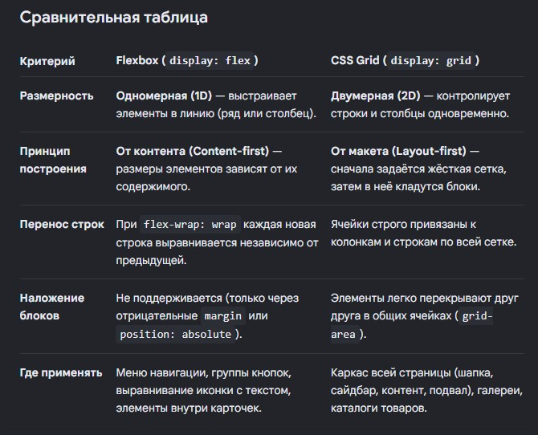

Почему старые способы не работают
Долгое время раскладку делали через float, position и таблицы. Это работало, но требовало хаков: clearfix, отрицательных отступов, фиксированных высот. Макеты ломались при изменении контента, а адаптивность превращалась в мучение.
Flexbox и CSS Grid решили эту проблему. Они созданы именно для раскладки и делают то, что раньше приходилось «выкручивать» вручную.
Flexbox: одна ось
Flexbox — модель для выравнивания элементов в одном направлении: по строке или по колонке. Идеален для навигации, карточек в ряд, кнопок с иконками.
Ключевые свойства контейнера:
- display: flex. Включает flex-контейнер.
- flex-direction. Направление: row (строка) или column (колонка).
- justify-content. Выравнивание по главной оси.
- align-items. Выравнивание по поперечной оси.
- gap. Расстояние между элементами.
- flex-wrap. Перенос элементов на новую строку.
Свойства элементов:
- flex-grow. Насколько элемент растягивается.
- flex-shrink. Насколько сжимается.
- flex-basis. Базовый размер.
- order. Порядок элемента.
CSS Grid: две оси
Grid — модель для создания сеток: и по строкам, и по колонкам одновременно. Идеален для страничных макетов, галерей, дашбордов.
Ключевые свойства:
- display: grid. Включает grid-контейнер.
- grid-template-columns. Колонки (например, repeat(3, 1fr)).
- grid-template-rows. Строки.
- gap. Расстояние между ячейками.
- grid-column / grid-row. Позиция элемента в сетке.
- grid-template-areas. Именованные области для наглядных макетов.

Когда что использовать
Простое правило:
- Flexbox — когда элементы выстраиваются в одном направлении: меню, ряд кнопок, центрирование.
- Grid — когда нужна сетка из строк и колонок: страничный макет, галерея, дашборд.
- Вместе. Grid задаёт крупные области страницы, Flexbox выравнивает элементы внутри них.
Не пытайтесь сделать всё на Flexbox или всё на Grid. Они дополняют друг друга. Grid — для сетки страницы, Flexbox — для содержимого блоков.
Пример: карточки товаров
Карточки товаров — классическая задача для Grid. Контейнер задаёт сетку из трёх колонок, карточки автоматически выстраиваются в ряд и переносятся на новую строку при сужении экрана.
Внутри карточки используется Flexbox: изображение, заголовок, цена и кнопка выстраиваются в колонку, а кнопка прижимается к низу через margin-top: auto.
Пример: навигационная панель
Навигация — задача для Flexbox. Логотип слева, меню справа, всё выровнено по центру по вертикали. Свойство justify-content: space-between разводит логотип и меню по краям, align-items: center выравнивает по вертикали.
При адаптации под мобильный меню может перестраиваться в колонку через flex-direction: column или скрываться под кнопку-бургер.
Flexbox и Grid делают макет гибким. Дизайнер, который понимает эти модели, проектирует раскладки, которые легко верстаются и адаптируются. А ещё — может сам собрать лендинг без разработчика.
Итог
Flexbox и Grid — современный стандарт раскладки. Flexbox выравнивает элементы по одной оси, Grid строит сетку по двум. Вместе они позволяют создавать сложные адаптивные макеты без хаков.